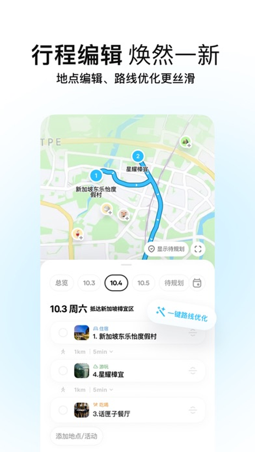
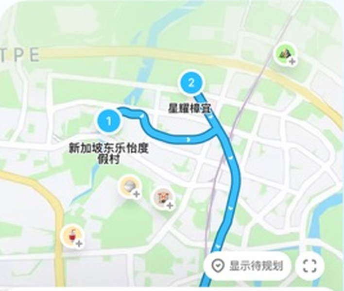
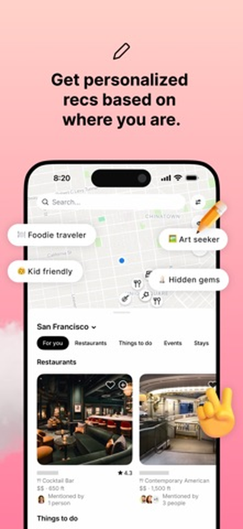
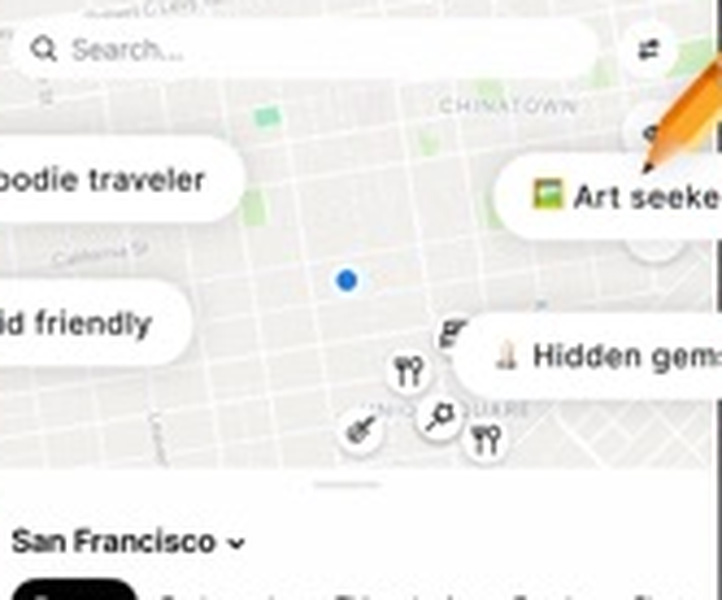

用户旅程图
完整旅行旅程
01 目的地选择
浏览内容、搜索目的地
02 行前规划
搜集攻略、筛选景点、安排路线
03 旅行准备
预订酒店、购买车票、准备物品
04 旅行途中
游玩景点、品尝美食、充分休息
05 旅行结束
结束旅程、整理照片、发朋友圈
研究聚焦：行前规划阶段
部分途中调整与体验问题，可能在规划时埋下隐患，直到实际执行时才暴露。
01 确定出行计划
02 了解目的地
03 收集景点
04 编排行程
05 检查与确认
用户目标
确定目的地、日期与天数
了解目的地的特色小吃、标志性景点、地方博物馆等等
筛选感兴趣、值得去的地点
安排每天游玩的顺序与游览路线
确认行程是否合理
用户行为
确定地点、时间和同行者
搜索攻略，提前查看好天气、规划好交通
提前了解景点开放和预约规则
搜景点、看评价
收藏感兴趣的地点、筛选出来之后放进行程里
按照景点的距离安排游玩顺序、并通过搜地图安排交通工具和预估时间
检查开放时间、预约、交通安排、游览时间和行程路线
工具
社交平台、旅游APP
小红书、抖音、地图、景区官网
小红书、大众点评、地图、旅游平台
地图、备忘录、旅游App
地图、景区官网、
预订平台、备忘录
痛点与困难
目的地信息多，不知道自己可以去什么地方玩
信息分散；季节、天气、地域规则和一些特殊限制因人生地不熟没办法提前得知可能会导致一些行程无法进行
信息过载；需要查找多个帖子才能了解景点的特色，分别总结起来对比很麻烦
空间关系复杂；可能会出行绕路、重复经过、低估交通耗时的情况导致旅行过程浪费太多时间不必要的时间
多平台同步使用，容易遗漏一些潜在的问题，导致旅途当中才被发现
用户需求
快速明确适合自己的出行方向
了解真实情况与限制条件
快速了解景点特点
提供想要参观的景点后能够根据景点设计直观合理的路线安排
安排旅程时提前发现潜在问题，获得优化建议
用户情绪
期待、好奇
感兴趣、纠结
兴奋、紧张
混乱、疲惫
担忧、不确定
从痛点到设计机会
01 / 用户痛点
02 / 用户需求
03 / 用户洞察
04 / 设计机会
1、目的地信息认知不足
网上可查的攻略很多，却缺少季
节、地域与特殊规则认知。
→
在出发前就能掌握真实情况、潜
在限制与特殊规则。
→
搜集到很多景点信息，但获取的
信息多是安利向，不一定真正了
解到目的地的真实情况和规则
→
将天气、交通、开放与特殊规则
关联到具体地点，用户点击或选
取时第一时间可以获取到相关信
息
场景：雪山冬季可能因下雪封路，部分景点有特殊的开放时间，用户抵达后才发现原计划无法执行
2、景点空间关系认知不足
逐个添加景点，但对整体位置与
路线规划并不清晰，有时候多走
了很多路或者绕路。
→
规划时能够直观看到位置、距离
与交通关系，从而合理安排游玩
顺序。
→
知道想去哪里玩，但不确定该怎
样合理组合地点，安排合适的顺
序。
→
以地图为视觉核心，关联地点、
路线、游览顺序与时间，用户规
划时对方位的感知更加直观。
场景：顺路地点被安排在最后一天，前几天却多次经过该区域/做计划时需要切换地图软件逐个搜索参考目的地方位。
3、缺乏整体行程整合能力
按照他人制定的攻略计划出行但
不确定整体计划的合理性以及与
自己旅行偏好的适配性。
→
提前知道计划是否合理，在预期
的季节、时期能否顺利执行。
→
部分分析出来的攻略看似完整，
不代表真实条件下可执行，适配
所有人。
→
Agent整体诊断已有行程，发现
问题并按照个人偏好提供优化建
议。
场景：看到他人的旅行很成功，想按照他人制定的攻略复刻一次旅行，但不确定整体计划的合理性以及与自己旅行偏好的适配性。
4、缺乏动态变化的感知和调整能力
制定行程后，无法及时关注目的地的天气、人文等因素的变化导致行程需要临时修改。
→
提前获取可能影响计划的不确定因素，提前制定或变更计划，不影响后续及整体计划的执行
→
制定了一版看似完美的计划，但不确定后续不会出现特殊因素导致产生变化
→
Agent定期整理已有行程，发现问题并弹窗提示用户潜在隐患并提供更改方向。
场景：原定计划上午去爬山，但临期才发现会下雨导致行程延期或取消，临时又无法产出可替代的第二方案，导致旅行时间和精力的无意义消耗
核心设计机会
01 目的地知识关联
02 行程点空间关系可视化
03 整体行程诊断
04 定期检索动态变化
目标用户画像
用户特征
典型行为
01
确定旅行的地点、时间、天数
02
搜索目的地攻略
03
收藏感兴趣景点、饭店等
04
手动组织行程、安排路线
05
使用地图工具查看具体位置
06
检查开放时间、交通、预约等
核心痛点
对应需求
目的地信息分散，难以整合
→
渐进式展开信息
景点之间的空间关系不够直观
→
在行程规划中加入地图位置关系
难以判断行程中的游览顺序是否合理
→
提供最佳游览路径与行程时间规划
无法提前发现行程中存在的潜在问题
→
提前了解下一站的行程情况
提前规划行程安排
注重效率
风险防范意识较高
01
02
03
核心用户画像
有行程规划需求的旅行用户
竞品分析
圆周旅迹
一款将小红书等平台的攻略链接或截图一键解析为可编辑、可协作行程路线的免费规划工具
Mindtrip
一个覆盖目的地发现、个性化规划到航班酒店预订全流程的AI旅行平台


路线与顺序
地图地点标记
路线连线 + 编号地点
核心提供“自动优化”与“手动拖拽”两条路径


可显示地点标记与推荐
侧重点在于“可视化呈现”与“外部数据导入”
六个观察维度
行程输入方式
支持旅行地点输入：仍需一定手动整理
可通过AI对话规划旅行
地点管理方式
地点输入与信息整理
行程表与地图地点关联
地图呈现方式
点到点路线关系、地点连接
团队所测视图主要呈现地点标记
路线理解支持
地图辅助查看连接：顺序调整方式有手动拖拽与对话修改
团队认为顺序与路线不够直观，是可视化工具而非诊断工具
行程检查能力
地图支持整体检查：从路线绕路、 时间冲突、开放时间三个方面展开
地图能否帮助发现行程问题：没有内置诊断机制，需自己主动发现
决策辅助能力
自动诊断、解释与优化建议：主要体现在交通与天气决策
自动诊断、解释与优化建议：没有主动查错功能
已有能力基础
地点整理、地图展示、路线规划与AI规划已构成产品基础。
机会点：如何让地图帮助用户理解、检查和判断整份行程？
产品定位
一款服务于旅游前规划的垂类Agent
Agent / 理解与推理
读懂旅行计划、读取目的地信息、分析地理位置
检查计划合理性、发现问题并提供优化建议。
UI / 呈现与决策
可视化地点与路线；标记保留地点、解决潜在问题，对比方案差异；
帮助用户理解建议、参与调整决策并确认调整。
目的地关联
从单点信息 → 目的地整体理解
提前了解季节、天气、交通、开放条件、当地风俗与特殊限制，识别其对具体行程的影响
路程规划
从景点安排 → 空间与时间分析
景点位置、游玩顺序、交通与开放时间，提前发现并避免绕行、重复经过的情况
即时调整
AI 生成规划 → 用户决策
出现问题时，AI 可以自动修改当前规划，由用户确认或进入下一轮修改
生成式UI
01 整体路线地图
加入路线地图与景点间的空间关系，增加规划空间性
02 目的地信息标记
每个目的地由AI生成信息卡片，介绍目的地相关信息
03 行程问题预知
AI 评估当前行程规划、提前了解行程上的时间、路线等问题
04 方案对比
保留历史规划路线、呈现历史路线与优化方案的差异
05 动态调整
旅途中用户可以随时修改规划、可保留、动态调整
整体路线 + 问题标记 + 方案对比
1
2
3
4
A / 起点
B / 景点
D / 景点
C / 景点
问题：预约时段可能冲突
建议调整顺序，保留原景点
距离 / 时间：按实际数据展示
ABCD
1234